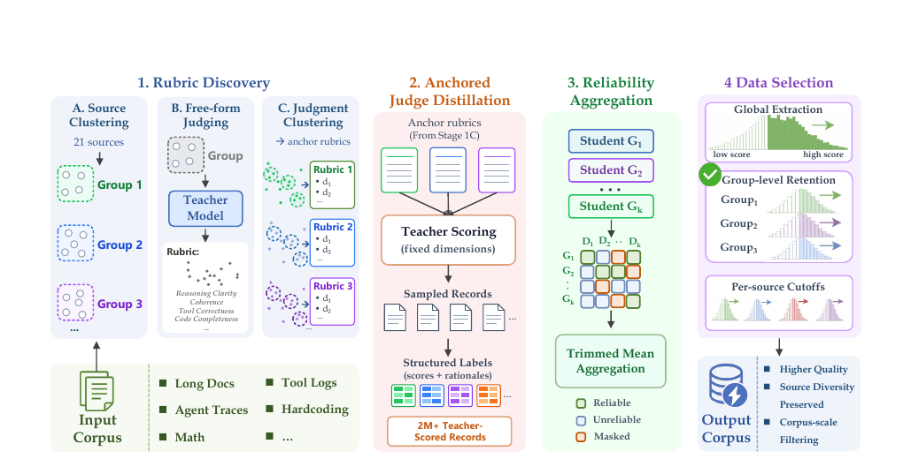
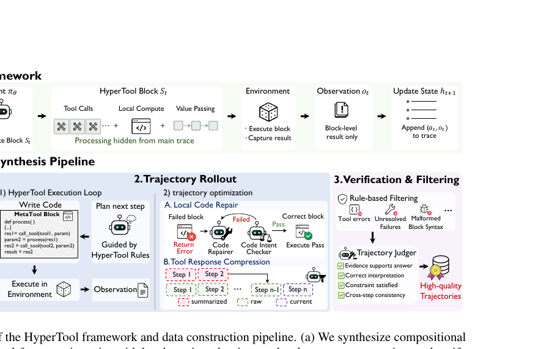
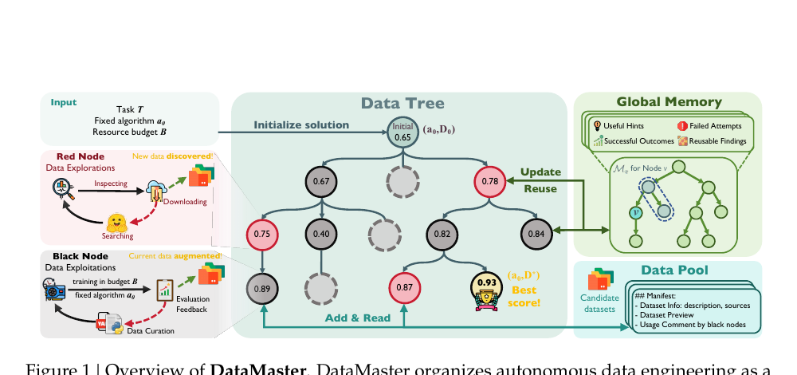
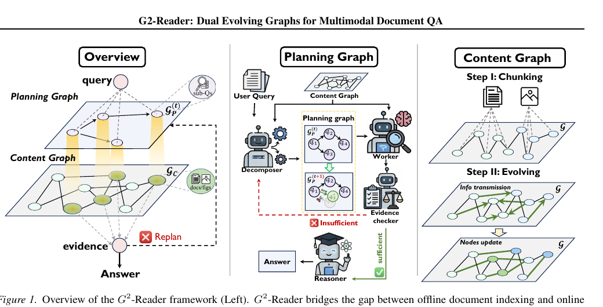
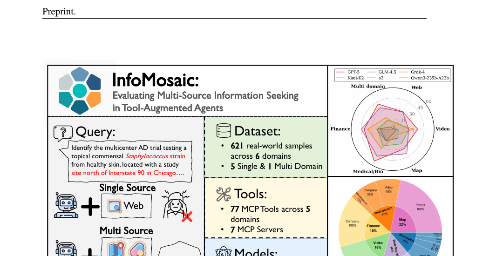
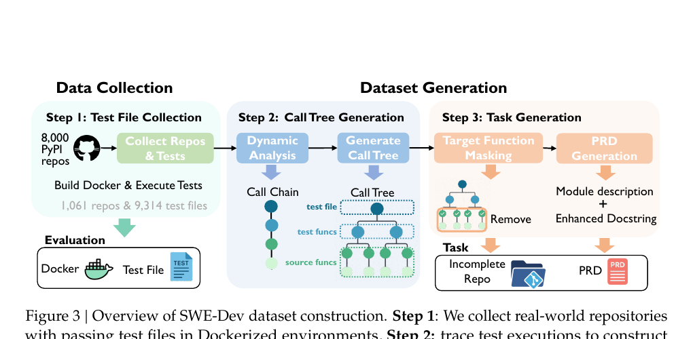
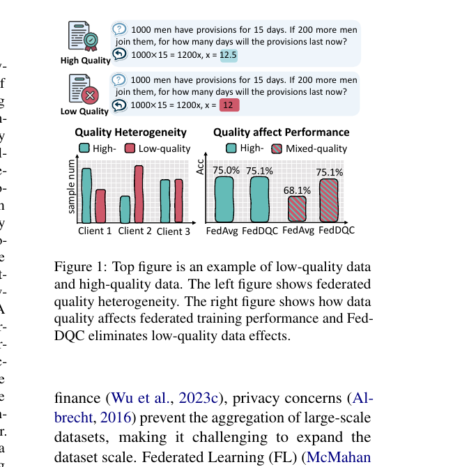

Tool-Using Agents
I study how language-model agents interact with tools and external environments, with recent work on MCP-based tool learning, web browsing, and environment-grounded agent benchmarks.
I am a fourth-year direct-entry Ph.D. student in Computer Science at Shanghai Jiao Tong University, advised by Prof. Siheng Chen. I am currently looking for research and engineering opportunities, especially around foundation models and agent systems.
Outside research, I enjoy meeting new people, food, travel, and all kinds of new experiences. If you are also working on agents, coding models, or open-ended evaluation, I would be happy to connect.
My recent work is organized around a few connected directions.
I study how language-model agents interact with tools and external environments, with recent work on MCP-based tool learning, web browsing, and environment-grounded agent benchmarks.
I work on training strategies for agentic and coding-oriented language models, including role-wise multi-agent training, coder-verifier co-evolution, and mid-training for coding LLMs.
I build benchmarks and data-centric resources for studying how agents and coding models behave on realistic, feedback-driven tasks such as software engineering.
A few papers that best represent my recent work on agent systems, coding models, and open-ended evaluation.

ArXivarXiv preprint
A recent study on rubric-anchored mid-training and source-aware data selection for coding and foundation model training.

ArXivarXiv preprint
A recent agent paper on moving beyond step-wise tool calling toward more structured and flexible tool use.

ArXivarXiv preprint
A data-centric research framework for building and studying autonomous AI systems at scale.

ICML 2026ICML 2026
A multimodal document understanding method that models evolving graph structures for question answering.

ICLR 2026ICLR 2026
A benchmark for studying how tool-augmented agents gather and integrate evidence across multiple sources.

NeurIPS Wksp
ACL 2025ACL 2025 Findings
A data-quality-control method for federated instruction tuning that improves robustness under heterogeneous client data quality.
Recent and Selected
Other Publications
Technical reports and model releases related to industrial coding models and test-time scaling.
Jun 2026
Efficient test-time computation scaling for code generation
Technical report
A recent technical report on improving test-time computation scaling for coding models with a more efficient looping strategy.
Apr 2026
Reasoning-oriented industrial code model
Mar 2026
Industrial code foundation model
This post summarizes how I think about training multi-agent systems, including MAS generation, component-level training, and co-evolution. I also discuss why training MAS is fundamentally different from prompt engineering alone, and where the main open problems still are.
Read the post